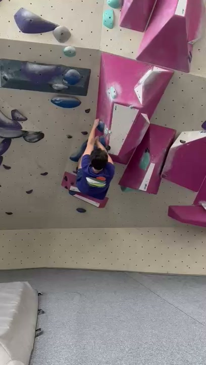
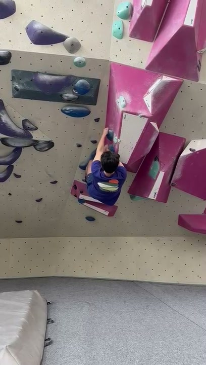
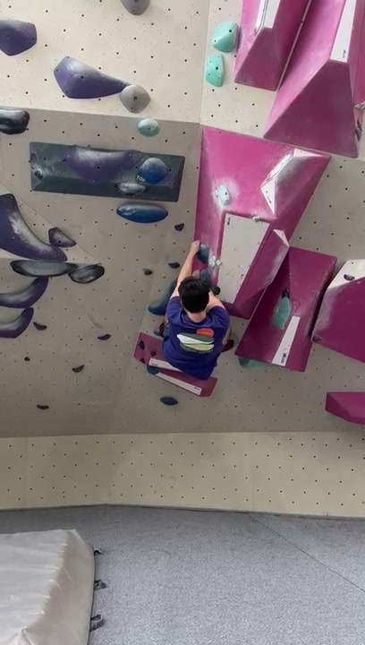
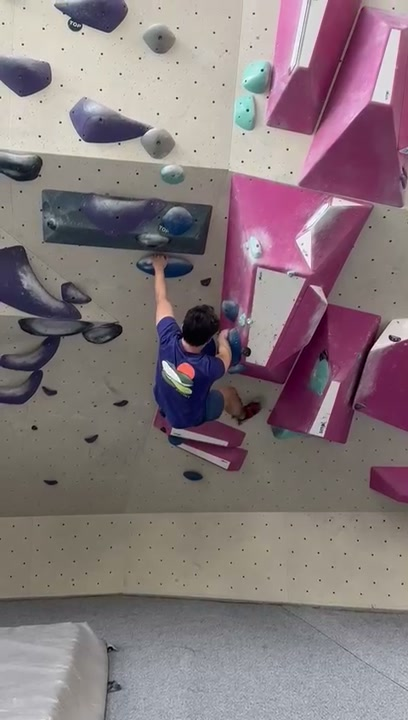
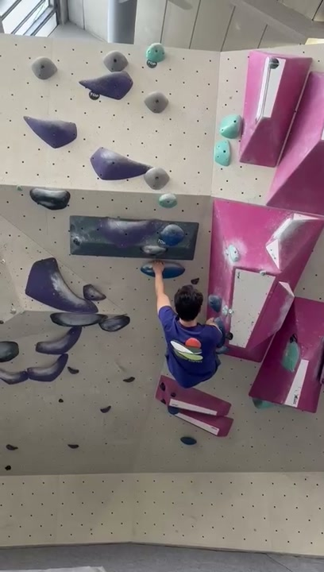
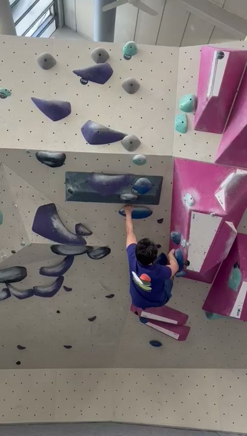
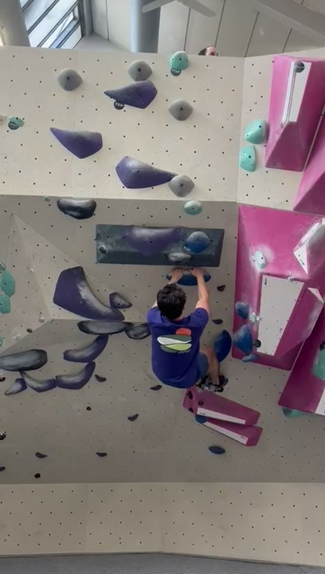
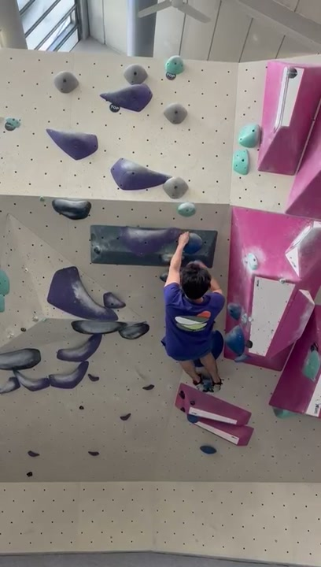
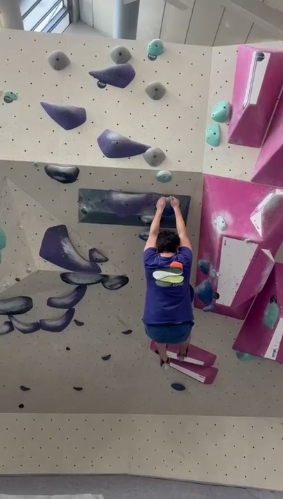
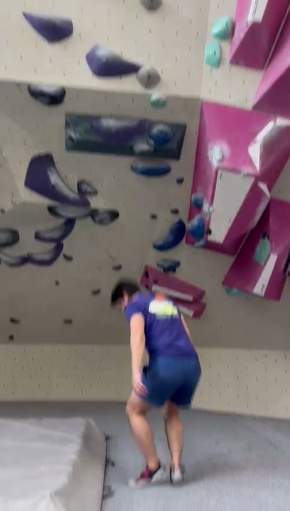

10-frame technical analysis — indoor bouldering session
Power-dominant — the climber relies heavily on upper-body strength and deep lock-offs rather than efficient hip rotation and skeletal hanging. Moves are executed with adequate body tension but without the energy-saving techniques that distinguish intermediate from advanced climbing.
Route: Leftward-upward traverse on slightly overhanging wall with pink volumes and bolt-on holds.
On easy terrain (2–3 grades below project), climb every move with an exaggerated hip turn. Left hand reaches → right hip to wall. Right hand reaches → left hip to wall. Do 4 × easy boulder problems. Focus: ingraining the hip turn as default movement pattern.
Traverse a long wall section with a strict rule: arms must stay straight at all times. All movement comes from feet and hips. If an arm bends, restart. 3 × 20 moves. Focus: learning to generate movement from the lower body.
Climb any route with the rule that your feet must make zero noise on contact. Every placement is deliberate, precise, toe-first. Partner listens and calls out any audible footfall. 4 × routes. Focus: precision placement and awareness.
On easy terrain, every single hand move must include a flag (alternate inside and outside). Even if balance doesn't require it, flag anyway. 3 × problems. Focus: building flagging into the movement vocabulary so it becomes automatic.
Before grabbing a hold, hover your hand 2 cm from it for a 2-second pause. This forces you to be fully stable (hips turned, feet weighted, core engaged) before committing. 3 × problems. Focus: eliminating lunging and building positional awareness.
Pick 4 boulder problems at flash grade. Climb all 4 back-to-back with no rest between. Rest 4 min. Repeat 4 sets. Focus: maintaining technique under pump — the lock-off habit will worsen when tired, so practice staying efficient.










You're climbing with solid body tension and committed reaches — these are genuine strengths that many climbers struggle to develop. Your core stays engaged even at full extension on overhanging terrain, and you don't hesitate when going for holds. The single biggest upgrade available to you right now is hip rotation: turning the same-side hip into the wall before every reach. This one change will give you free reach (5–10 cm), slash your lock-off demand (your right bicep is doing double duty because your hips stay square), and make flagging feel natural rather than forced. Spend 4 weeks doing the twist-lock drill and straight-arm traversing on easy terrain, and you'll see a grade jump. Your footwork on volumes is adequate but generic — start consciously placing toes on edges rather than standing flat, even when volumes tempt you to be lazy. The technique is there in flashes (frames 5, 9) — the goal is making it your default, not your exception.